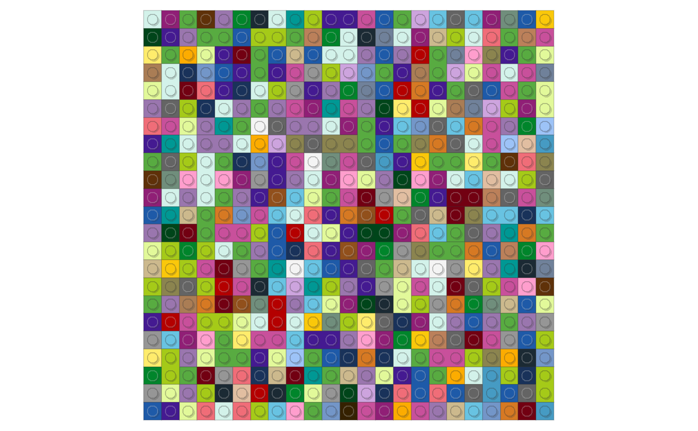
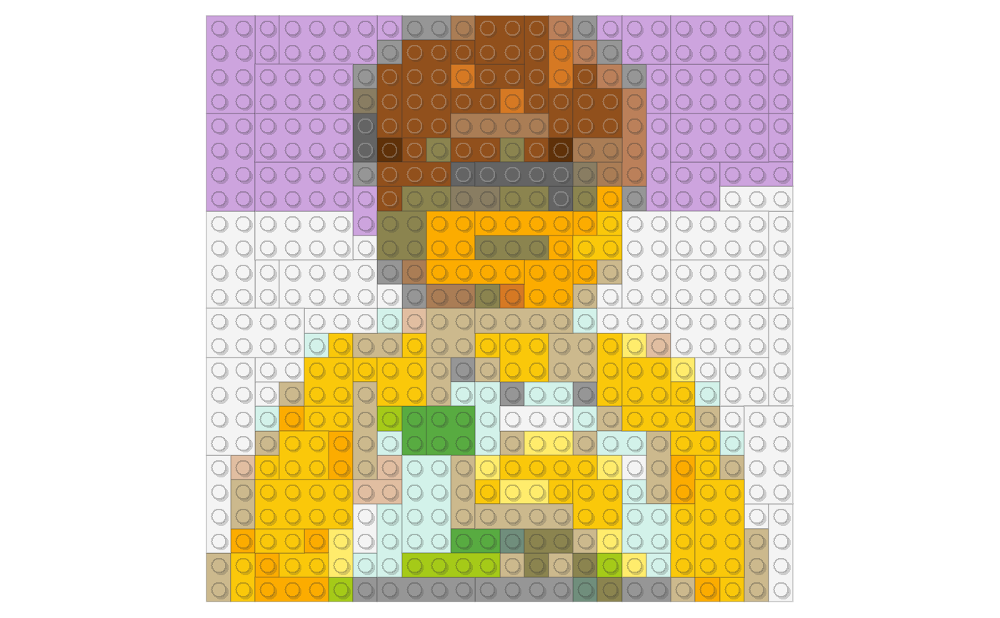
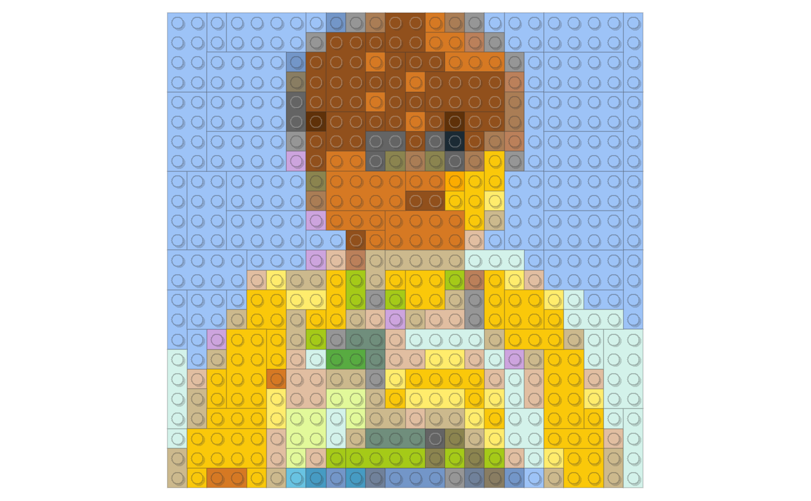
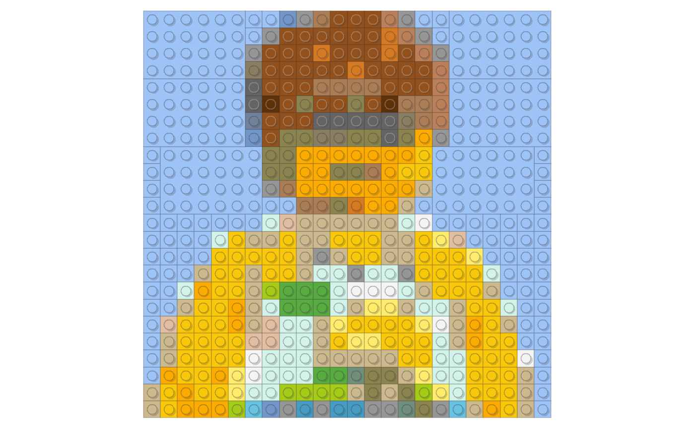

Generate brick mosaics from an image or matrix with customization options.
image_to_mosaic( img, img_size = 48, color_table = NULL, method = "cie94", color_palette = c("universal", "generic", "special"), trans_bg = "White", dithering = FALSE, contrast = 1, use_bricks = NULL, brightness = 1, warhol = 1:3 )
Arguments
| img | Image matrix to convert into mosaic. Usually from |
|---|---|
| img_size | Size of output image in pixel, where one pixel = one 'brick'. Use a single value (e.g. |
| color_table | Defaults to |
| method | The method to use for comparison. Options are 'euclidean', 'cie1976', 'cie94', 'cie2000', or 'cmc'.
See |
| color_palette | Brick color rarity to use. Defaults to all colors: 'universal' (most common), 'generic', and 'special' (least common). This is useful when trying to build the mosaic out of real bricks.
Use "bw" for only grayscale bricks. Ignored if a |
| trans_bg | If |
| dithering | Improves color of large, photo-realistic mosaics. |
| contrast | For |
| use_bricks | Array of brick sizes to use in mosaic. Defaults to |
| brightness | A value >1 will increase the brightness of the image while a positive value <1 will decrease the brightness. |
| warhol | Array of values |
Value
A list with element Img_lego containing a data frame of the x- & y-coordinates, R, G, B channels, and mapped color of each brick (pixel).
See also
Other Mosaics:
build_mosaic()
Examples
# Import a jpeg or png demo_file <- system.file("extdata", "demo_img.jpg", package = "brickr", mustWork = TRUE) demo_image <- jpeg::readJPEG(demo_file) #Create a 24x24 mosaic # \donttest{ demo_image %>% image_to_mosaic(img_size = 24) %>% build_mosaic()# } #Only use the two more common tiers of colors # \donttest{ demo_image %>% image_to_mosaic(img_size = 24, color_palette = c("universal", "generic")) %>% build_mosaic()# } #Be more prescriptive with colors using 'color_table'. # Here, we prevent all blues from being used lego_colors_no_blue = lego_colors %>% dplyr::filter(!grepl("[Bb]lue|[Aa]zur", Color)) # \donttest{ demo_image %>% image_to_mosaic(img_size = 24, color_table = lego_colors_no_blue) %>% build_mosaic()# } #Color matching is done with the 'farver' package. There are different method. # Change the method to euclidean (RGB distance matching) # \donttest{ demo_image %>% image_to_mosaic(img_size = 24, method = "euclidean") %>% build_mosaic()# } #Change the default size of bricks to use. # In this extreme example, use 4x6s for the background, 1x1 everywhere else # \donttest{ demo_image %>% image_to_mosaic(img_size = 24, use_bricks = c("4x6")) %>% build_mosaic()# }